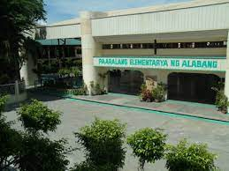
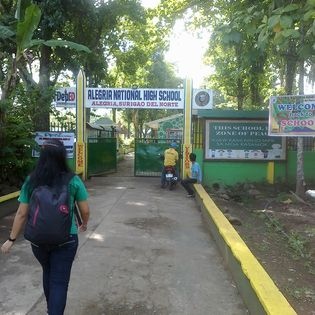
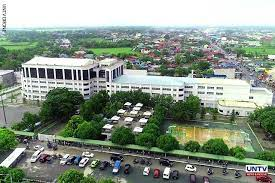

Welcome to my school_history/dark past
i was 4 years old when i started to enter pre school in my nursery nothing exciting happen to me
but when i was in my kinder school year i was the top 1 stundent thanks to my mother and father who teachs me before and after my class i have many awards and medals but it was lost during the typhoon undoy
when i was a grade 1 stundent i got to attend the section 4 and nothing happend to me. when i was a grade 2 iam still in section 4 student i got to expercience the buulying i was bullied by a girl my seatmate we are always arguing about the space in our table. when i was a grade 3 student i got to in the section 7 i got rank down because in our school the higher number you got in section is the rank. when i was a grade 4 student nothing seems historical happend to me but when i was in grade 5 i got to be in top 2 in academics. in grade 6 nge
when i was a hisgchool student i was studying in alegria national highchool surigao mindanao
currently this year 2022 i am a second year collage student in laverdad christian school
